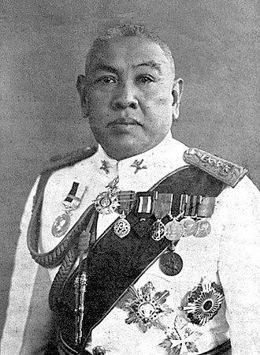
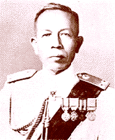
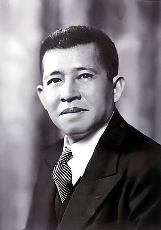

revolution of government 2475
การปฏิวัติระบบการเมืองการปกครองของไทย พ.ศ.2475
คณะราษฎร
เป็นผู้ทำการปฏิวัติ
รายนามผู้ก่อตั้งคณะราษฎรรุ่นแรก
1 ร้อยโท แปลก ขีตตะสังคะ นักเรียนวิชาทหารปืนใหญ่ ประเทศฝรั่งเศส
2 ปรีดี พนมยงค์ นักเรียนวิชากฎหมาย ประเทศฝรั่งเศส
3 ร้อยโท ประยูร ภมรมนตรี นักเรียนวิชารัฐศาสตร์ ประเทศฝรั่งเศส
4 ร้อยตรี ทัศนัย มิตรภักดี นักเรียนวิชาทหารม้า ประเทศฝรั่งเศส
5 ตั้ว ลพานุกรม นักเรียนวิชาวิทยาศาสตร์ ประเทศสวิตเซอร์แลนด์
6 จรูญ สิงหเสนี ผู้ช่วยราชการสถานทูตสยามในประเทศฝรั่งเศส
7 แนบ พหลโยธิน นักเรียนวิชากฎหมาย ประเทศอังกฤษ
คณะผู้ก่อการปฏิวัติ เรียกตนเองว่า "คณะราษฎร" มีสมาชิกในการก่อตั้งรุ่นแรก 7 คน ซึ่งเป็นคณะที่ไปศึกษาที่ยุโรป ได้วางแผนประชุมกันครั้งแรกที่ กรุงปารีส พ.ศ.2469
หัวหน้าฝ่ายทหารบก
พลเอก พระยาพหลพลพยุหเสนา
หัวหน้าฝ่ายทหารเรือ
พลเรือเอก หลวงสินธุสงครามชัย
หัวหน้าฝ่ายพลเรือน
ศาสตราจารย์ ปรีดี พนมยงค์